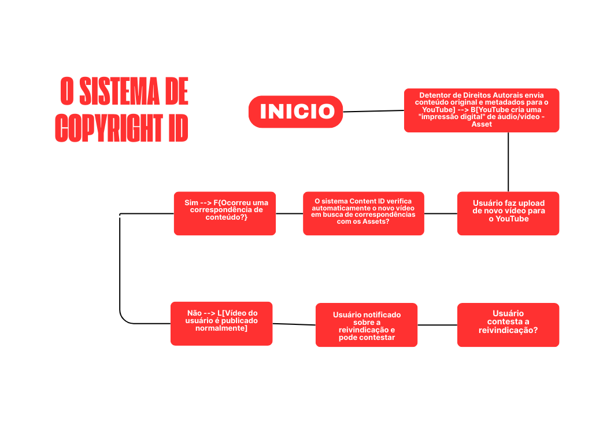

Investigação Digital — Sistema Copyright ID do YouTube
Home
Bem-vindo ao nosso relatório investigativo sobre o Sistema de Copyright ID do YouTube.
Aqui mostramos como a plataforma identifica automaticamente se um vídeo enviado contém conteúdo protegido por direitos autorais.
aqui uma parte mais explicada sobre cada coisa:
Este site apresenta a lógica, os dados, as telas, a psicologia por trás da ferramenta e a identidade visual da nossa equipe.
A Lógica — Fluxograma do Copyright ID
A seguir está o fluxograma que representa como o YouTube decide se um vídeo deve ser marcado por direitos autorais.

Explicação simples:
Quando um vídeo é enviado, o sistema extrai o áudio e o vídeo e compara tudo com uma enorme biblioteca de conteúdos cadastrados pelos donos dos direitos.
Se houver coincidência suficiente, o sistema cria automaticamente uma reivindicação e aplica a ação configurada (bloquear, monetizar ou monitorar). Se não houver coincidência, o vídeo é publicado normalmente.
Os Dados — Modelo DER
A seguir está o modelo conceitual do banco de dados necessário para a funcionalidade do Copyright ID.
Resumo:
- VIDEO guarda dados do vídeo enviado pelo usuário.
- CONTEUDO_REFERENCIA guarda conteúdos oficiais protegidos.
- CLAIM representa as reivindicações criadas automaticamente.
O Visual — Mockups da Interface
Exemplo de anotação técnica:
“Este alerta vem da tabela CLAIM.acao_aplicada”.
“O título do vídeo vem de VIDEO.titulo”.
Análise de Impacto Psicológico
O Copyright ID funciona bem porque transmite ao usuário a sensação de segurança e controle.
Os criadores de conteúdo sentem que seus direitos estão protegidos, enquanto o YouTube evita problemas legais.
Também utiliza o gatilho de autoridade: o sistema é automático, rápido e extremamente técnico, transmitindo credibilidade.
Além disso, reduz o esforço humano, um forte motivador psicológico — o algoritmo identifica trechos sem que o usuário precise fazer nada.